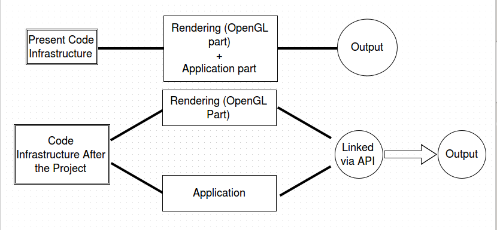
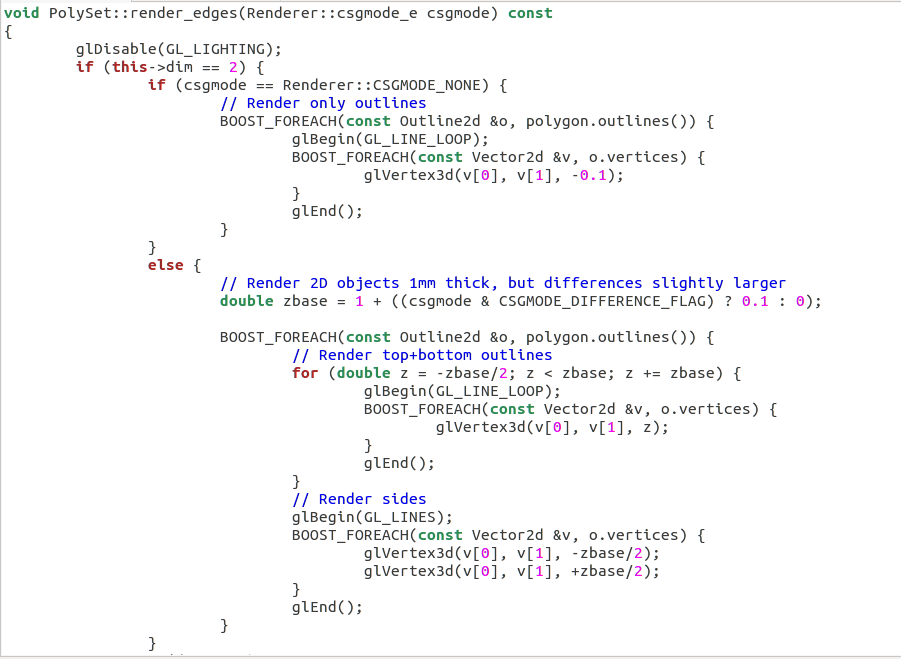

Improve OpenGL Rendering
GSOC Proposal 2015
Brief Description: The Objective of the project is to Re-factor and re-write the existing code of OpenSCAD preferably by implementing or using an existing rendering/scenegraph framework for cleaner rendering code. This newly developed infrastucture can be imported to softwares like GLES2 which opens up more possibilities like WebGL and native support for ARM Linux platforms that usually only provide GLES2 implementation.
Personal Information
- Name: Ankush Khandelwal
- Email-address: ankush.rawat95@gmail.com
- IRC username: ank_95
- Contact Number: +918886330979
- Skype Username:ankush1995
- Backup Contact Number: +919785425538
Background Information
- Pursuing Computer Science from IIIT Hyderabad, Andhra Pradesh, India. Currently in 2nd year.
- Skills - c/c++, OpenGL1/2/3, PHP, Mysql, Python, Web2py, Javascript, Jquery, HTML, CSS, Bash programming, Git.
- Worked in c, c++ and OpenGL 1/2/3.
- My previous works in c++ and OpenGL : https://github.com/ankush1995/OpenGL
- Interested in Graphics and front-end development.
- I am a Linux user and want to step in the Open Source World.
- I am familiar with git.
- Commit my work on git using github account(github.com/ankush1995).
- Here is the link to my CV : http://brlcad.org/w/images/1/1f/CV.pdf.
Project Information
Title: Improve OpenGL Rendering
Brief Summary
- The Main Objective of the project is to get a cleaner rendering code and also better support and better responsiveness for bigger models. The current rendering infrastructure of OpenSCAD is scattered around with various bits partially belonging to external packages (CGAL, OpenCSG)and the usage of OpenGL in many places degrade rendering performance of large models. Hence It is required to re-factor and re-write the existing infrastructure.
Detailed Description
- For the above described project following features and task needs to be done.
Identify Goals and Requirements
First and foremost task needs to be done is collecting info about existing OpenGL frameworks which have many advantages as well as disadvantages compared to OpenScad. By understanding them, we are able to identify what are the goals that needs to be achieved and also what problems can arise in meeting those goals. Here is a wiki page displaying some information about the same : https://github.com/openscad/openscad/wiki/Information-About-Other-Frameworks.
Spliting the OpenGL code in Different classes - CODE EXTRACTION
We need to split out the openGL code from the polyset classes and all other classes and make a different class or data structure and it is used directly. In All it should be a seperate component which takes objects (for example , polyset) and renders it, in an effort to isolate the rendering from the rest of the software. The code of OpenSCAD is in openGL 2 and 1.1 + extentions and also we have users on openGL 2 and openGL 1.1 + extentions , so abstracting away OpenGL extensions and version differences is important.

If we know exactly how much GL code is in a file , the next step would be to turn it into a separate component, i.e. a class or set of functions that take a polyset as parameter and renders it. This will help in making the main files of openSCAD, free from rendering, there will be a separate component for rendering. This class would then be responsible for converting polyset data into something more suitable for OpenGL.For example it does not make sense to render one single object in OpenGL ,it is not even supported in mordern OpenGL without enabling legacy compatibility. To enhance our understanding on code extraction we take an example. Below we have a function from file polyset.cc which is used in rendering edges, now we want to separate it from the polyset.cc file such that the moved code is not allowed to use any private methods or any member variables of polyset.

To do that we take this function to another file and we create a renderer class and add API to polyset to enable that rendering class to extract the data. The renderer can now compile a VBO from that data and render that (plus cache the VBO so it can be reused if the polyset doesn’t change). See below patch for practicle application. Then, in the future, when we use a real OpenGL framework, the renderer will most likely build a VBO using classes internal to that specific rendering framework all the VBO stuff would then be built without having to make any changes to the PolySet class. If we can compile for example polyset without actually having OpenGL (e.g. on GLES2 box like Chromebook) in it then it will be a measure of success of code extraction.
A patch has been submitted in which the OpenGL code is in one file and other renderin code is in another : https://github.com/openscad/openscad/pull/1249
Selecting Scenegraph/Rendering Library
Selecting the most suitable Library which can be integrated with the newly developed code will require some research about the existing libraries. In openSCAD OpenGL ES2 is not yet supported, till now immediate-mode opengl is used. The Goal of this scene-graph library would be to provide rendering data structure to abstract buffer objects and also to manage Qt event mappings to camera. By the help of this library the internal segments of openSCAD will be entirely independent of rendering. This Library will help to refactor internal OpenSCAD code instead of the current rendering used in OpenSCAD. The Rendering using the Library will be more simple and clean, it will be helpful for calling CGAL objects, Polyset objects and helper objects like axis display. With this library many features can be implemented like the speeding up of OpenGL 3d mesh drawing etc.
Off-Screen Rendering
This is another feature which is very important. There should be GUI-less off-screen rendering which means without the window we can do rendering and it should work on desktop as well as on headless VMs. The only requirement is that it works on all desktop OS’es and headless Linux, but better headless support is a priority.
View-model
The next step could be to create a “view model” for storing OpenGL-centric data structures for efficient rendering. The main purpose of making view model is for rendering views, so we can use this to store all the OpenGL related component so that we have better rendering. Another important task would be to convert the polyset into a better data structure for rendering, and use that data structure from the OpenGL code so that the opengl code isn’t referencing PolySet at all that would make it easier to create a separation between the Model and the View.
TIMELINE
This timeline is tentative, depends upon the status of the work done:
Get to Know the Community
- Talk to the community members.
- Getting comfortable with the code.
Week 1(May 25)
- Identify Goals and Requirements related to the project.
- Understanding the code in more detail.
Week 2-3(June 1)
- Looking through the files from which OpenGL code is to be extracted and understanding it.
- Deep understanding of code, where the functions are called and where the objects are made.
- Starting separating openGL code from the various files.
- Going on with two implementations - old and new. Old one will be intact.
Week 4(June 15)
- Only the rendering part is separated, nothing else, excellent knowledge of c++ will be required.
- The extracted OpenGL code is then written in a seperate component either a class or data structures.
- Linking the rendering code to the main infrastructure begins.
- Making a renderer class.
- adding API to polyset to enable that rendering class to extract the data from the main files.
Week 5(June 22)
- Making a seperate segment ( either a renderer class or a data structure ).
- These classes will be public, so that we can inherit the same in multiple files.
- Extracting the OpenGL code from the various classes like polyset etc.
- Now the original files does not contain OpenGL code, all the OpenGL code is written in separate files.
- Making renderer class for whole code of openscad.
- This process will continue for 2-3 weeks.
Week 6(June 29)
- Continuing creating an abstract supertype of the class containg GL code and calling the objects in appropriate places.
- This will help in decreasing code redundancy. Now the code will be more compact, distributed in various components.
- using same class or data structure for same objects which currently are written many times in different files.
- Then we just have to make the same class in the files and extract the data from the two files..
MID-term Evaluations
Week 7(July 6)
- brushing up the code.
- Taking feedback about the new implementation.
- Old one is also there which is the current implementation (before the starting of the project).
Week 8-9(July 13)
- Solving issues on github, #292, #675, #418 etc.
- Research about using existing library.
- There are lots of existing library so using the best suitable library.
- Discussing with community members about the library.
- This library will be a seperate GL rendering library which will make the internals of openSCAD independent of rendering.
Week 10-11(July 27)
- Integration phase begins.
- Integrating the library in the new implementation.
- Starting the development of view-modal system.
Week 12 (August 10)
- Listing out various Rendering Engines on which experiment can be done of the newly developed code.
- Experimenting with other frameworks.
- trying to implement Off-screne Rendering feature with the help of new OpenSCAD which supports OpenGL ES2, but this is optional.
Week 13(August 17)
- Cleaning up the code.
- Time to make up for missed milestone (if any).
Week 14
- more testing and cleaning.
- providing the users with new implementation of OpenSCAD.
Final Evaluation
Deliverables
- Cleaner rendering code.
- All the way new implementation of OpenSCAD.
- Better support and better responsiveness for bigger models
- view-modal of the OpenGL code
- Better rendered model
Communication
Time Availability
I will be available 40 to 48 hours / week and I am not having any prior engagements, also I can spend more time according to the work requirement.
Email/Mailing List
My email address is ankush.rawat95@gmail.com, I have subscribed to both brlcad and openscad mailing lists. I have been in contact through these mailing lists and irc channel with other community members.
Real-Time Contact
I am interacting with the mentors through OpenSCAD's IRC channel(#openscad) on freenode. My nick name on IRC is ank_95 . I am comfortable with talking to my mentor via telephone if needed. Contact Number: +918886330979
Why OpenSCAD?
OpenSCAD is an open source CAD software application used to make 3D solid models. It has various applications in mechanical, civil, electronics and designing hardware tools for research and education purposes. The software has potential to be used by the large number of professionals and hardware developers. I like ths community beacause it is related to graphics, geometry and this it the first time I am contributing in opensource world and participating in GSOC. And I think IRC is the best way of communication with the mentors, I feel very comfortable asking questions to them on IRC(#openscad) and also discuss about new ideas.
Why OpenGL Rendering Project?
After I decided to work under this community, I explored various projects and this projects fascinated me and I thought that I am able to this project as I like C++ a lot and understands it better. I am pretty sure that I will able to do this project and if I do not know something I will learn it and apply in the project. I have looked through the code, various classes and libraries and understood it. After the completion, we can import the code and use it in other software like WebGL etc.
Why Me?
I am very interested in programming and very enthusiastic about contributing in open source community.I like c++ a lot and working with it in past 2-3 yrs.Graphics is the another field that interests me a lot, I have a passion toward graphics and if I am given with the opportunity , even after the submission of project I would love to contribute in more projects for the community. I have already started working on this project and also in touch with project mentors. Also I can come up with new ideas and love to solve some real world problems. I will apply my full potential in doing the project, submitting every patch before deadline.I like OpenGL and like to use software for rendering 2d and 3d model designing so I know what are the things that user wants while using them.
RISK-ASSESSMENT
One particular challenge that comes in my mind is about developing scenegraph rendering library. We have to take two implementations with us, one with using the library and another without using the library. This Library will change the current openSCAD to an another level but if the project fails then we have to go on with the old implementation of immediate mode OpenGL. The challenges I see in the project are when it comes to import the code in softwares like GLES2 . Another challenge will come when it comes to chose/create a library to provide rendering data structures to the buffer objects. One challenge will also arise as the users are used to the old implementation of rendering objects, they are not used to the new implementation.
Futher Scope
Here are some functionality that could be enabled if the project is successful:
- GUI object inspection (e.g. highlight bbox, size of imported STLs).
- Pick object in 3D window and highlighting in the code.
- Pick object in the code and highlight in the 3D window.